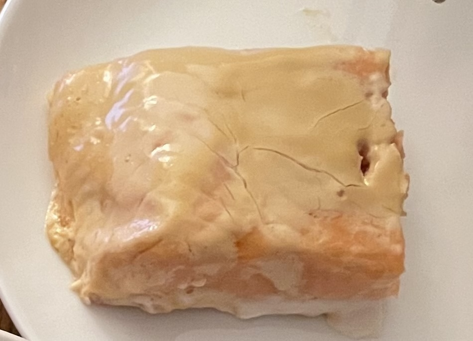

Mayo Salmon Recipe

Description
This easy and filling dish was a staple of my childhood. Tender and flaky salmon is enhanced by a golden coating of mayo that adds rich flavor while requiring little skill in the kitchen to make.
Ingredients
- 1 salmon fillet (at least 1 lb)
- 1/2 cup of mayonnaise
- 1 tsp of soy sauce
- 1 tsp of sriracha
- 1/2 tsp of sesame oil
- 1/2 tsp of garlic powder
- Optional: 1/4 cup of panko crumbs
Steps
- Preheat the oven to 425ºF.
- Lay a piece of parchment paper onto a baking sheet large enough for your salmon. Place the salmon fillet on top of the paper.
- Add the mayo, soy sauce, sesame oil, sriracha, and garlic powder to a small bowl. Mix to combine.
- Spread the mayo mixture over the salmon fillet. If you are using the panko crumbs, sprinkle them on top.
- Bake for 12–16 minutes, until an internal temperature of 120–125ºF is reached.
- Serve with rice and enjoy!